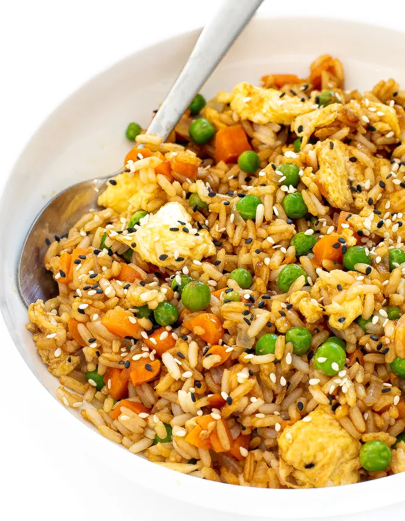

Fried Rice

Description
A sweet crunchy dish with onions, carrots, peppers, peas
and mushrooms. Extra vegetables can be added if you wish.
Cook this recipe for the family, we’re sure that your kids
and all will love it.
Ingredients
- 1 tbsp vegetable oil
- 25g frozen peas
- 1/2 carrot, sliced into small pieces
- 1/2 onion, sliced
- 1/2 green pepper, diced
- 4-6 mushrooms, sliced
- 1 egg, beaten
- 250g, long grain rice, boiled
- 1 tsp salt, or to taste
- 2 tbsp soy sauce
- 1 tsp sesame oil
Instructions
- Prepare rice. see our recipe for boiled rice.
Leave rice to cool as it is easier to manage
when cooled. When ready to stir fry, fluff up
the cold rice with a fork before frying.
- Slice or dice the vegetables
- Heat oil in a wok, on high heat until hot.
- Add the onion, carrots and green pepper and
fry for a minute. Then add in the mushrooms and
peas. Fry for another 2-3 minutes. Once done,
place the vegetables in a dish and put to one
side.
- Next, pour beaten egg into wok, stirring constantly.
When egg has cooked a little into a scramble (about
a minute or two) add in the boiled rice and fry for
three minutes.
- Now add the vegetables back into the wok and incorporate
into the rice. Finally add salt, soy sauce and sesame
oil and fry for another two minutes. Serve.
- For extra garnishes add 1 bunch chopped spring onions.